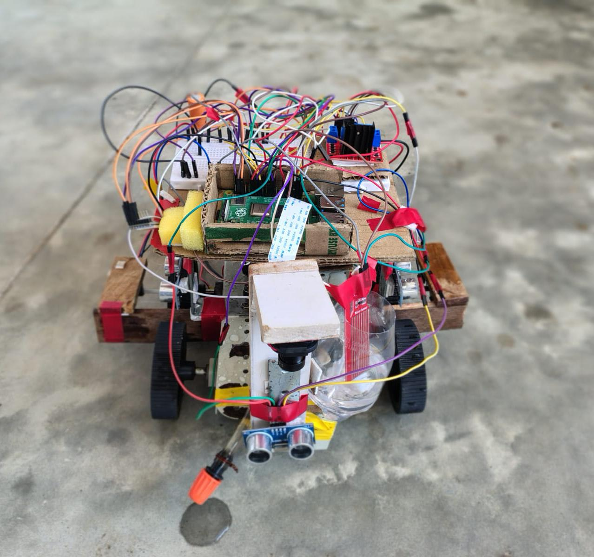
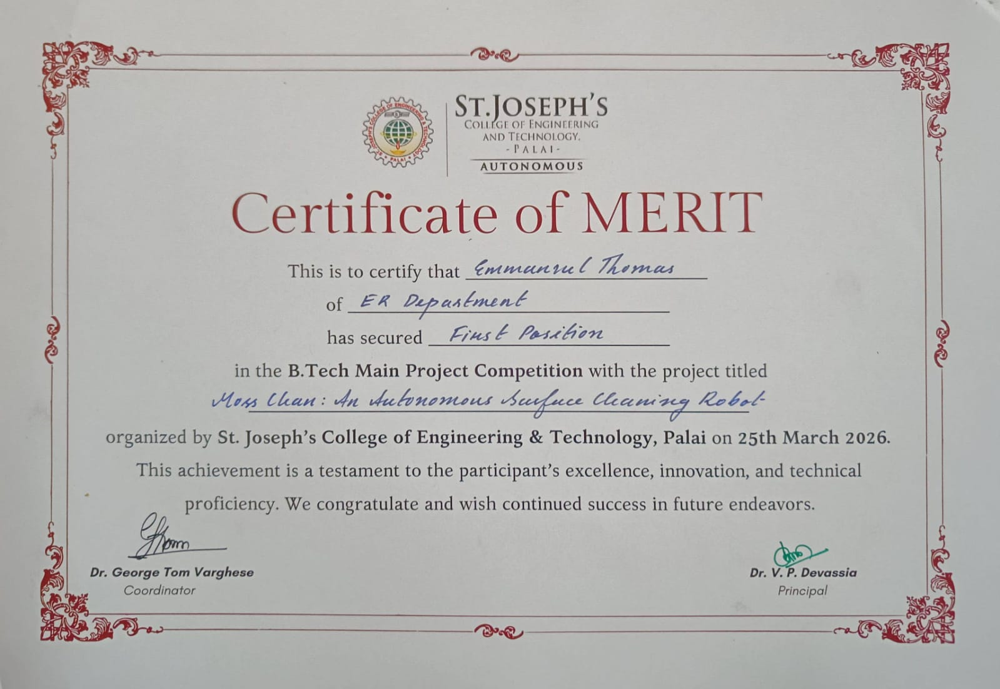
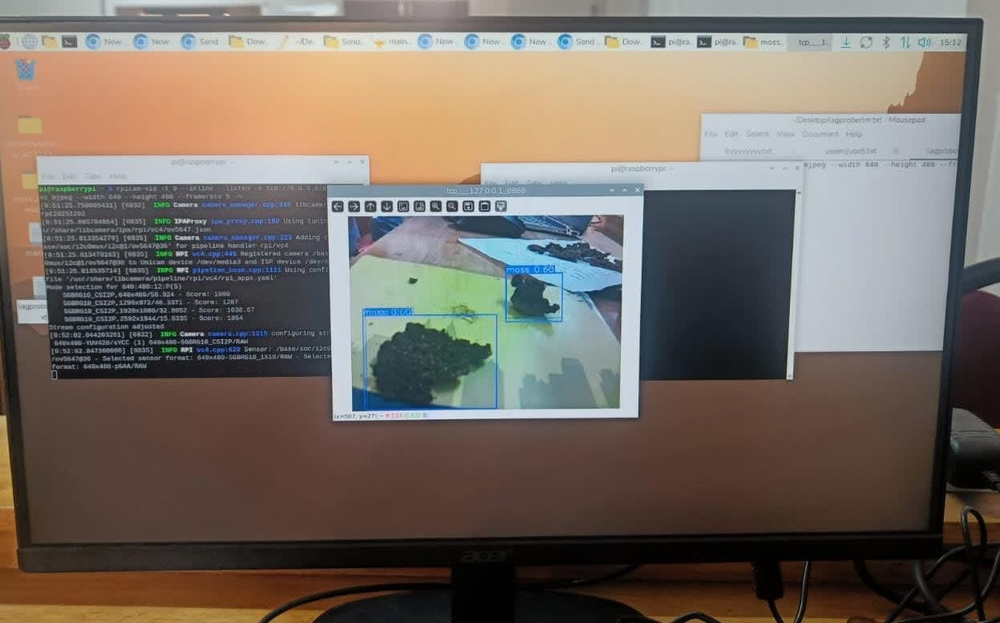
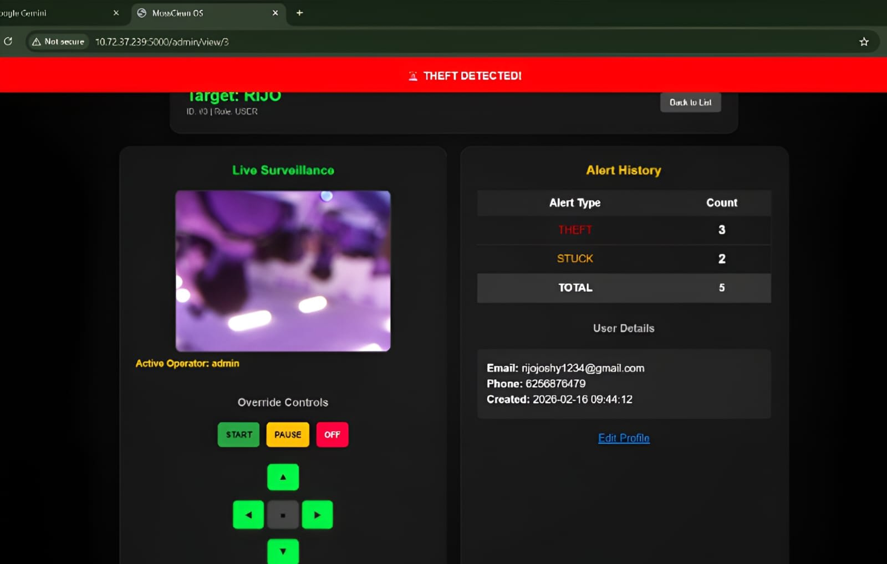

AI-Powered Autonomous Surface Cleaning Robot (MossClean)
An autonomous surface-cleaning robot designed to detect moss using computer vision and perform targeted cleaning with autonomous navigation and obstacle avoidance.
The system combines Raspberry Pi, YOLOv11n, OpenCV, autonomous navigation, targeted spraying and a Flask-based web monitoring dashboard.

Project Overview
MossClean is an autonomous surface-cleaning robot that combines computer vision, embedded systems and autonomous navigation to detect and clean moss-covered surfaces.
The robot uses a Raspberry Pi with an OV5647 camera for visual input, YOLOv11n for moss detection, ultrasonic sensors for obstacle detection and a targeted spraying mechanism for cleaning.
Problem & Solution
Problem
Moss growth on outdoor surfaces can make cleaning difficult, time-consuming and dependent on manual inspection and treatment.
Solution
MossClean detects moss automatically, navigates across the surface, avoids obstacles and performs targeted cleaning where moss is detected.
Autonomous Navigation
GPS-independent navigation uses dead reckoning, occupancy grids, heading correction and differential PWM control.
Smart Cleaning
The system activates targeted spraying based on detected moss regions while maintaining autonomous surface coverage.
AI Development
The computer vision system was developed around YOLOv11n for moss detection. Image data was collected and prepared for model training, followed by testing and integration with the Raspberry Pi vision pipeline.
Computer Vision
OpenCV and YOLOv11n were used for real-time image processing and moss detection.
Model Training
Image data was collected, prepared and used to train and evaluate the moss detection model.
AI Integration
The trained detection model was integrated into the robot's real-time control and cleaning pipeline.
Prompt Engineering
Prompt engineering and AI-assisted development were used throughout software, web and computer vision development.
Technology
Computer Vision
YOLOv11n, OpenCV and OV5647 5MP camera.
Navigation
Dead reckoning, occupancy grid, proportional heading correction, differential PWM and A* frontier recovery.
Obstacle Avoidance
Four HC-SR04 ultrasonic sensors, LM393 optical encoders and MPU-6050 IMU.
Web Monitoring
Flask dashboard with live telemetry and SMTP alerts.
Robot Prototype

Project Highlights
Winner Certificate

Moss Detection

Web Monitoring Dashboard
